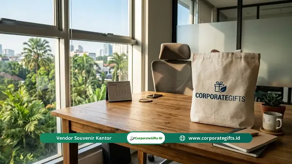

Corporate Gifts ID - Momen perayaan pascaramadan selalu menjadi ajang silaturahmi yang sangat ditunggu di lingkungan kerja kita. Tradisi kebersamaan melalui acara halalbihalal mempererat ikatan emosional antara pimpinan, karyawan, serta relasi bisnis eksternal. Namun, tradisi kebersamaan ini berpotensi besar menyumbang tumpukan sampah plastik dan kemasan sekali pakai jika kita tidak bijak dalam memilih bingkisan cinderamata.
Poin Kunci Souvenir Halalbihalal Eco Friendly:
- Esensi Keberlanjutan: Mengurangi limbah plastik dan sampah sekali pakai saat momen perayaan silaturahmi pascaramadan.
- Sinergi Nilai: Memadukan ajaran kebaikan menjaga kelestarian alam dengan kepedulian lingkungan korporat (ESG & CSR).
- Fungsionalitas Tinggi: Menghadirkan produk bermanfaat harian seperti tumbler termal, agenda daur ulang, dan tote bag organik.
- Citra Korporat Positif: Membangun reputasi perusahaan modern yang peduli ekologi, profesional, dan bernilai estetika tinggi.
Tahun ini, banyak instansi pemerintah, BUMN, hingga korporasi multinasional mulai beralih secara sadar dari barang sekali pakai menuju konsep pemberian yang memiliki makna mendalam. Kesadaran merawat kelestarian bumi membuat pergeseran tren souvenir pascaramadan bergerak drastis menuju program keberlanjutan lingkungan (zero waste lifestyle).
Sebagai spesialis kurasi cinderamata korporat, kami melihat langsung semakin banyak pelaku bisnis yang mencari paket souvenir halalbihalal yang memberi manfaat nyata bagi alam sekaligus berkesan bagi penerimanya. Jika institusi lambat mengadaptasi tren hijau ini, peluang emas memperkuat komitmen tanggung jawab sosial lingkungan (TJSL) di hadapan klien dan stakeholder strategis dapat terlewatkan.
Makna & Filosofi Souvenir Halalbihalal Eco Friendly
Secara mendasar, souvenir halalbihalal eco-friendly adalah bingkisan apresiasi yang dibagikan dalam momentum silaturahmi pasca-Ramadan yang dirancang khusus untuk memadukan nilai tradisi luhur, etika spiritual, dan tanggung jawab pelestarian lingkungan hidup.
- Penyatuan Nilai Teologis dan Ekologi: Bingkisan ini menyelaraskan amanah untuk senantiasa menjaga keseimbangan alam semesta ciptaan Tuhan. Tujuannya murni untuk menghindari perilaku konsumtif yang mubazir serta mengurangi pencemaran lingkungan hidup di sekitar kita.
- Pemberian Bermakna Penuh Niat (Mindful Gifting): Tradisi seremonial yang kaku kini bertransformasi menjadi apresiasi yang berkesadaran tinggi. Nilai cinderamata tidak lagi dinilai dari kemewahan visual yang semu, melainkan dari besarnya dampak positif bagi keberlanjutan dan perajin lokal nusantara.
- Daur Hidup Produk yang Panjang (Durability): Standar pemilihan barang selalu mengevaluasi siklus hidup produk secara komprehensif. Prioritas utama selalu tertuju pada material yang awet digunakan bertahun-tahun atau bahan alami yang mudah terurai hayati (biodegradable).
- Pengemasan Murni Bebas Sampah (Zero Waste Packaging): Pendekatan kontemporer ini berani meninggalkan plastik pembungkus, bubble wrap sintetis, atau pita sintetis. Solusi cerdasnya beralih pada kearifan lokal seperti kemasan kertas daur ulang kraft, honeycomb paper wrap, atau besek anyaman bambu alami.
Kategori Penerima Bingkisan Silaturahmi Korporat
Memberikan hadiah korporat ibarat menyajikan secangkir teh hangat istimewa untuk tamu kehormatan di ruang pertemuan Anda. Anda tentu ingin menyajikan rasa terbaik agar momen perjumpaan tersebut melekat abadi dalam ingatan mereka. Begitu pula dengan pemilihan bingkisan halalbihalal yang perlu disesuaikan dengan segmentasi audiens:
- Klien atau Pelanggan Utama: Bingkisan tulus ramah lingkungan memperkuat ingatan merek (brand recall) secara positif. Barang berkualitas yang digunakan dalam keseharian membuat mereka senantiasa teringat pada komitmen profesional perusahaan Anda.
- Mitra Relasi Bisnis Strategis: Rekanan kerja andalan membutuhkan pengakuan nyata atas kolaborasi hebat selama ini. Langkah elegan melalui cinderamata ramah lingkungan mampu membangun kepercayaan solid untuk kemitraan bisnis jangka panjang.
- Karyawan Internal Perusahaan: Sebagai pilar utama kemajuan bisnis, seluruh staf berhak mendapatkan apresiasi pascaramadan yang mendongkrak semangat kerja. Memilih ide souvenir halalbihalal karyawan yang fungsional terbukti efektif memfasilitasi produktivitas kerja harian.
- Peserta Acara Seminar & Stakeholder: Pertemuan tatap muka berskala besar sangat ideal dilengkapi buah tangan edukatif yang mengkampanyekan kepedulian terhadap kelestarian lingkungan dan gaya hidup sehat.
Rekomendasi Pilihan Bingkisan Ramah Lingkungan Terbaik
Memilih produk yang tepat sasaran di antara ratusan varian merchandise di pasaran membutuhkan ketelitian tinggi. Berikut adalah rangkuman kategori bingkisan hijau terbaik yang paling diminati untuk agenda silaturahmi korporat:
1. Kategori Custom Fungsional Harian
Kategori ini berfokus pada barang utilitas harian yang secara aktif mengurangi timbulan sampah plastik di ruang kantor maupun mobilitas perkotaan:
- Tote Bag Kain Katun Organik: Tas kanvas atau katun organik berkualitas tinggi yang menggantikan tas kresek belanja. Personalisasi logo sablon water-based menjadikannya media promosi berjalan yang elegan.
- Tumbler Stainless Steel Termal (SUS 304): Botol minum insulasi ganda yang sukses menekan ketergantungan pada air mineral kemasan botol plastik sekali pakai. Grafir logo laser menghasilkan identitas visual yang permanen dan tahan baret.
- Pulpen Material Bambu Alami: Alat tulis berkarakter alami yang menawarkan sentuhan hangat untuk meja kerja profesional. Bambu merupakan material cepat tumbuh yang menyerap karbon secara optimal tanpa merusak hara tanah.
- Buku Agenda Kertas Daur Ulang: Buku catatan ramah lingkungan yang diproduksi dari kertas daur ulang tanpa penebangan pohon baru. Tersedia pula varian sampul berbenih (plantable seed paper) yang dapat ditanam kembali menjadi tanaman herbal atau bunga.

Pilihan material ramah lingkungan mulai dari kayu, bambu, hingga katun organik yang elegan untuk gift set halalbihalal.
2. Kategori Premium Elegan Berkelas
Untuk jajaran direksi, komisaris, atau klien VIP prioritas, bingkisan ramah lingkungan dapat dikemas dalam sentuhan estetika mewah yang memikat:
- Set Hadiah Mewah Aromaterapi Alami: Kombinasi botol keramik buatan perajin lokal, lilin kedelai alami (soy wax), dan minyak atsiri murni nusantara. Pilihan ini selaras dengan konsep souvenir halalbihalal personalisasi premium yang memancarkan ketenangan.
- Aksesori Meja Kerja Kayu Jati Lestari: Jam meja kayu atau docking station smartphone berbahan kayu jati bersertifikasi legalitas kayu (SVLK). Material alami ini memberikan aksen prestisius di ruang kerja pejabat sembari mempertahankan jejak karbon netral.
3. Kategori Teknologi Berkelanjutan Terkini
Menggabungkan kecanggihan perangkat digital dengan material terbarukan adalah daya tarik utama cinderamata korporat modern:
- Powerbank Tenaga Surya Fleksibel: Pengisi daya portabel cadangan yang memanfaatkan panel surya untuk pengisian daya ramah lingkungan saat aktivitas luar ruangan, dilapisi cangkang berbahan wheat straw daur ulang.
- Speaker Nirkabel Balutan Kayu & Bambu: Pengeras suara portabel bluetooth dengan casing kayu alami yang elegan. Menawarkan kualitas audio prima tanpa mengorbankan komitmen terhadap kelestarian ekologi.
- Flashdisk Casing Bambu Personal: Perangkat penyimpanan data esensial dengan penutup magnetik berbahan bambu halus. Grafir laser tanpa tinta kimia sintetis menjadikannya aman dan ramah daur ulang.
Tabel Perbandingan Material & Estimasi Anggaran
Untuk mempermudah penyusunan rencana anggaran biaya (RAB) pengadaan di instansi Anda, berikut tabel estimasi harga dan segmentasi paket souvenir halalbihalal ramah lingkungan:
| Paket Souvenir | Kombinasi Material Ramah Lingkungan | Estimasi Harga / Unit | Rekomendasi Target Penerima |
|---|---|---|---|
| Eco Starter Kit | Tote bag katun kanvas organik, pulpen bambu, dan stopmap daur ulang | Rp35.000 - Rp65.000 | Seluruh karyawan, peserta gathering massal, dan komunitas |
| Eco Daily Wellness | Tumbler stainless steel termal SUS 304 grafir logo dan cutlery set kayu | Rp65.000 - Rp125.000 | Staf operasional, panitia internal, dan mitra kolaborator |
| Eco Executive Office | Buku agenda kertas benih, flashdisk casing bambu, dan pouch katun | Rp110.000 - Rp195.000 | Level supervisor, manajer, dan relasi bisnis reguler |
| Eco VIP Premium Gift | Docking jam meja kayu jati SVLK, botol keramik pengrajin, dan box besek anyaman | Rp220.000 - Rp450.000 | Jajaran direksi, komisaris, tamu VVIP, dan klien prioritas |
Catatan: Estimasi harga dapat disesuaikan berdasarkan volume pemesanan (MOQ), tingkat kerumitan teknik grafir logo, serta spesifikasi kemasan custom yang dipilih.
Panduan Seleksi Vendor Souvenir Berkelanjutan
Eksekusi pengadaan bingkisan ramah lingkungan yang sukses mutlak membutuhkan keterlibatan mitra vendor yang berpengalaman dan transparan. Sebelum menerbitkan surat pesanan resmi, perhatikan panduan penting berikut:
- Hindari Praktik Greenwashing: Pastikan vendor mampu membuktikan keaslian klaim ramah lingkungan melalui sertifikasi bahan, seperti uji food-grade stainless steel, legalitas kayu SVLK, atau asal usul katun organik yang jelas.
- Selaras dengan Target ESG Perusahaan: Konsultasikan portofolio vendor terkait komitmen pengelolaan limbah produksi dan pemberdayaan perajin lokal agar sejalan dengan target tata kelola korporat Anda.
- Hitung Lead Time Produksi Secara Akurat: Pembuatan barang alami berbasis kerajinan tangan seperti anyaman bambu atau pengerjaan kayu memerlukan waktu pengeringan dan QC yang lebih teliti dibandingkan produk plastik massal. Lakukan pemesanan minimal 3 hingga 5 minggu sebelum agenda acara.
- Eksplorasi Layanan Mockup Gratis: Mintalah proofing digital dan sampel fisik sebelum produksi massal dimulai guna memastikan proporsi ukiran logo sinar laser tampak presisi pada material serat alami.
Langkah sadar dalam memilih bingkisan halalbihalal ramah lingkungan terbukti mampu memberikan dampak berganda: mempererat silaturahmi, mengangkat reputasi merek korporat, serta menjaga kelestarian ekosistem bumi untuk generasi mendatang. Hubungi tim konsultan kami untuk merancang paket bingkisan pascaramadan yang paling selaras dengan identitas institusi Anda.
Pertanyaan Seputar Souvenir Halalbihalal (FAQ)

Ditulis oleh: Arinda Zakia
Senior Corporate Gifting SpecialistSpesialis kurasi cinderamata korporat dan bingkisan ramah lingkungan di CorporateGifts.ID. Berpengalaman mendampingi ratusan perusahaan nasional dan multinasional dalam merancang souvenir berkelas, fungsional, dan berkelanjutan.
Lihat Profil Lengkap & Panduan Lainnya